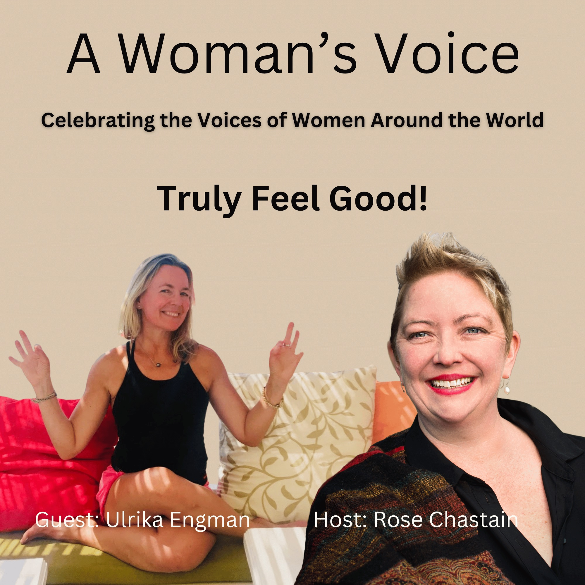

About A Woman's Voice
Welcome to A Woman's Voice, the podcast that amplifies the voices of women from all corners of the world. We bring you insightful and inspiring interviews with women who are making a difference in their communities, breaking barriers, and overcoming challenges.
We believe that women's stories are powerful and need to be shared. Through this podcast, we aim to provide a platform for women to share their experiences, thoughts, and ideas on a wide range of topics, from leadership and entrepreneurship to social justice and activism.
Join us as we hear from women from different backgrounds, cultures, and perspectives, and learn from their wisdom and insights. We believe there's power in hearing your own experiences reflected in another woman's story—reminding you that you're never alone.

I'm your host, Rose Chastain, and each week we are honored with the opportunity to hear inspiring voices of women making a difference.
Amplify Voices
Providing a platform for women to share their experiences, thoughts, and ideas on topics that matter
Break Barriers
Celebrating women who overcome challenges and create meaningful change in their communities
Global Perspectives
Featuring women from diverse backgrounds, cultures, and corners of the world
Inspire Action
Empowering listeners to make positive impacts in their own communities
Latest Episodes

Truly Feel Good
A centering, loving, nourishing conversation with Ulrika Engman about trusting yourself and your inner voice, having a good relationship with your body, practicing wonder for the world, and most importantly—practices to truly feel good. Ulrika is a Certified Somatic Movement and Yoga teacher, Expressive Arts therapist, and founder of Yoga Journeys.

Get What You Need Woman!
This conversation with Katrina van Oudhesuden will knock your socks off! We talked about women's unique business needs, reclaiming female power, the role of collaboration in success, and creating a business aligned with your energy. Katrina is CEO and Founder of CreatHER™ Business Rewire.

Give Your Body What it Needs
Full of real talk about how we still feel shamed in the world about what our bodies need. We share real life experiences where being a woman in the world was a problem to deal with and how we gave ourselves power. Dana Nardi is the founder of Nardi Consulting and a natural Integrator.

Relationships Matter
Dr. Janice Hooker-Fortman is the embodiment of grace and love. She brings wisdom and practical tools for better relationships with loved ones. Dr. Jan is a renowned public speaking coach, relationship coach, and award-winning author with over 20 years of experience.

Trust Yourself! It Will All Work Out!
Simone Bachaud and I talked about how no matter where you are in your business or life, it's easy to think "I should have this handled by now." She teaches that if you give yourself grace and trust yourself, it will all work out. Simone is the driving force behind Clear Profit 365, Inc.

Let Go and Be Who You Truly Are!
Kathryn Black L.Ac is permission itself inside of a delightful, compassionate, wise woman. She walks through the facts about stress and the pressure we put on ourselves trying to be who we think we should be. We're campaigning to make adult "time outs" popular! Kathryn is a Functional Medicine practitioner and acupuncturist.

Live Life With Your Whole Self
We talked about truly thriving and fully mourning—unlocking the key to being human. What parts of you need care? How to practice the sacred pause so you can inhabit the life you're living in this moment. Rebecca McLoughlin is a Certified Life Coach with a Master's in Counseling Psychology.

Authenticity, Autism, Telepathy, and Communication
Ky Dickens is an award-winning filmmaker celebrated for transformative documentaries. This conversation is an education about realities you may not have known and access to new powers of communication. Ky created The Telepathy Tapes podcast, which explores telepathy within the nonspeaking community.